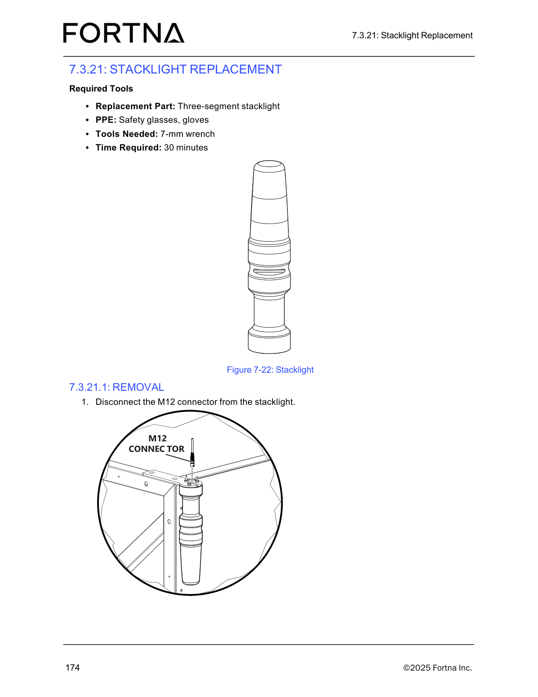

| Procedure ID | proc_disconnect_the_stacklight_m12_connector_during_stacklight_removal_v1 |
|---|---|
| Title | Disconnect the Stacklight M12 Connector During Stacklight Removal |
| Procedure Type | recovery |
| Primary Role | L2_support |
| Support Safe | No |
| Validation Status | needs_sme_review |
| Merge Status | source_finalized |
Source-specific runbook for the documented stacklight removal action in the OptiSweep Operation and Maintenance Manual. The provided source excerpt identifies required items, references Figure 7-22 for stacklight identification, and instructs the technician to disconnect the M12 connector from the stacklight as the first removal step in stacklight replacement.
Use when performing the documented removal portion of stacklight replacement and the task required is to disconnect the M12 connector from the stacklight using the source-backed items and figure reference provided in Section 7.3.21 / 7.3.21.1 Removal.
Responsible role: L2_support
Instruction:
Gather the listed items for the stacklight replacement/removal task: replacement three-segment stacklight, safety glasses, gloves, and a 7-mm wrench.
Expected result:
The listed PPE, tool, and replacement part are available for the task.
Screens / Images:

Stop or Escalate If:
Responsible role: L2_support
Instruction:
Locate the stacklight assembly and identify the M12 connector on the stacklight using Figure 7-22 as the source-backed visual reference.
Expected result:
The technician has identified the stacklight assembly and the M12 connector to be disconnected.
Screens / Images:
Stop or Escalate If:
Responsible role: L2_support
Instruction:
Disconnect the M12 connector from the stacklight.
Expected result:
The M12 connector is disconnected from the stacklight.
Screens / Images:
Stop or Escalate If: